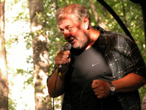

Официальный пресс-релиз

Ансамбль "Старая гвардия" возник в 1986 году. В его состав вошли Александр Сикорский (руководитель), Константин Никольский (гитара), Валерий Гилюта (гитара), Алексей Шачнев (бас) и Алексей Сикорский (ударные). В 1989 году к ним присоединился юный Денис Мажуков (тогда ему было шестнадцать лет). В том же году Алексея Сикорского сменил Михаил Соколов (Петрович), но в 1993 он стал "harmonica-man" и на его место пришёл Алексей Коллодий. Впрочем, состав варьировался: Никольский и Мажуков то принимали участие, то нет, так как были заняты в собственных проектах. Так это продолжается и по сей день. Название "Старая гвардия" не столько указывает на возраст участников, среди которых есть и вполне молодые, сколько символизирует приверженность стилю и основам музыки, называемой блюзом, соулом, ритм-н-блюзом, блюз-роком или просто рок-н-роллом. Программа состоит из произведений входивших в репертуар Рэя Чарлза, Джеймса Брауна, Эрика Клэптона, Тома Джонса, Стиви Уандера, Элвиса Пресли, Битлз, Чака Бери, Гарри Мура, Клэренса Брауна, Джо Брауна, Тины Тёрнер, Джо Кокера и др.По всем административным и организационным вопросам Вы можете обратиться к нашему директору Заборовскому Александру. Тел.
Официальный сайт группы: www.staraya-guardia.com
На фотографии (©А.Евдокимов): Александр Сикорский, июль 2007 г.